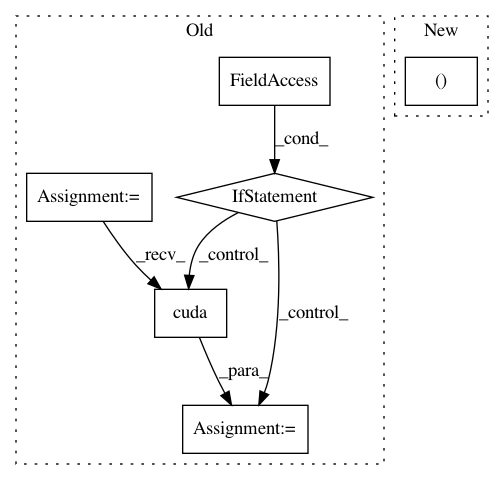

bed0a0ae26451c9897cf1ee0f7302e42eba9b42c,transformer/Models.py,,get_attn_subsequent_mask,#,31
Before Change
""" Get an attention mask to avoid using the subsequent info."""
assert seq.dim() == 2
attn_shape = (seq.size(0), seq.size(1), seq.size(1))
subsequent_mask = np.triu(np.ones(attn_shape), k=1).astype("uint8")
subsequent_mask = torch.from_numpy(subsequent_mask)
if seq.is_cuda:
subsequent_mask = subsequent_mask.cuda()
return subsequent_mask
class Encoder(nn.Module):
""" A encoder model with self attention mechanism. """
After Change
sz_b, len_s = seq.size()
subsequent_mask = torch.ones((len_s, len_s), device=seq.device, dtype=torch.uint8)
subsequent_mask = torch.triu(subsequent_mask, diagonal=1)
subsequent_mask = subsequent_mask.unsqueeze(0).expand(sz_b, len_s, len_s)
return subsequent_mask
In pattern: SUPERPATTERN
Frequency: 3
Non-data size: 6
Instances
Project Name: jadore801120/attention-is-all-you-need-pytorch
Commit Name: bed0a0ae26451c9897cf1ee0f7302e42eba9b42c
Time: 2018-08-23
Author: yhhuang@nlg.csie.ntu.edu.tw
File Name: transformer/Models.py
Class Name:
Method Name: get_attn_subsequent_mask
Project Name: Zhaoyi-Yan/Shift-Net_pytorch
Commit Name: bcbef3267f372186f457b9c22feec249bd85b2f6
Time: 2018-12-14
Author: yanzhaoyi@outlook.com
File Name: util/util.py
Class Name:
Method Name: cal_feat_mask
Project Name: kymatio/kymatio
Commit Name: 0ee8c00c8e4759edeeaebea99a4a10a4be9680db
Time: 2020-02-18
Author: edouard.oyallon@lip6.fr
File Name: kymatio/scattering3d/utils.py
Class Name:
Method Name: generate_weighted_sum_of_gaussians